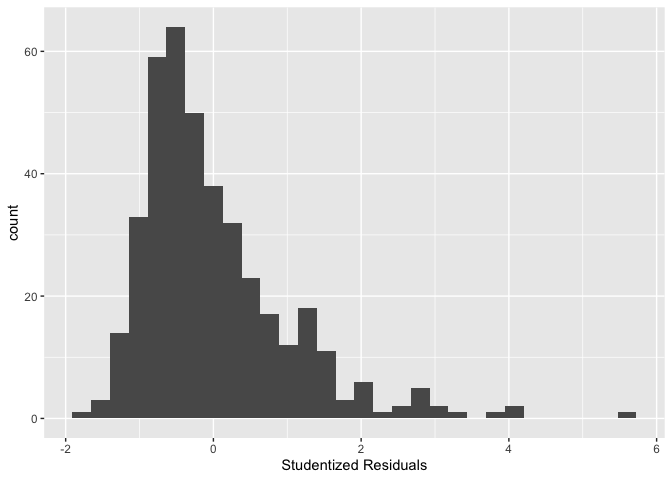

More Linear Regression
GEO 200CN - Quantitative Geography
Professor Noli Brazil
April 22, 2024
We’re in the second leg of our journey into linear regression. In last lab, we learned about simple linear regression and model fit. In this lab, we go through the R functions for running regression diagnostics and multiple linear regression. The objectives of this lab are as follows
- Learn how to run diagnostic tools to evaluate Ordinary Least Squares (OLS) regression assumptions
- Learn how to run and evaluate a multiple linear regression model
- Learn how to detect multicollinearity
To help us accomplish these learning objectives, we will continue examining the association between neighborhood characteristics and housing eviction rates in the Sacramento metropolitan area. We’ll be closely following the material presented in Handout 4.
Installing and loading packages
We’ll be using a couple of new packages in this lab. First, you’ll need to install them if you have not already done so.
install.packages(c("GGally", "lmtest", "car"))Load these packages and others we will need for this lab.
library(MASS)
library(tidyverse)
library(sf)
library(gridExtra)
library(GGally)
library(car)
library(lmtest)Bringing in the data
Download the csv file sac_metro_eviction.csv located on
Canvas in the Week 4 Lab and Assignments folder. Read in the csv file
using the read_csv() function.
sac_metro <- read_csv("sac_metro_eviction.csv")2017 eviction rate case data were downloaded from the Eviction Lab website. Socioeconomic and demographic data were downloaded from the 2013-2017 American Community Survey. A record layout of the data can be found here. Our research question in this lab is: What ecological characteristics are associated with neighborhood eviction rates in the Sacramento metropolitan area?
Checking OLS assumptions
The linear regression handout outlines the core assumptions that need to be met in order to obtain unbiased regression estimates from an OLS model. The handout also goes through several diagnostic tools for examining whether an OLS model breaks these assumptions. In this section, we will go through how to run most of these diagnostics in R.
Let’s also create a fake dataset that meets the OLS assumptions to act as a point of comparison along the way. We’ll call this the goodreg model.
#sets a seed so the following is reproducible
set.seed(08544)
x <-rnorm(5000, mean = 7, sd = 1.56)# just some normally distributed data
## We're establishing here a linear relationship,
## What's this "true" linear relationship we're setting up?
## So that y = 12 - .4x + some normally distributed error values
y <- 12 - 0.4*x +rnorm(5000, mean = 0, sd = 1)
goodreg <- lm(y ~ x)
summary(goodreg)##
## Call:
## lm(formula = y ~ x)
##
## Residuals:
## Min 1Q Median 3Q Max
## -3.7188 -0.6658 0.0158 0.6944 3.5102
##
## Coefficients:
## Estimate Std. Error t value Pr(>|t|)
## (Intercept) 12.033221 0.064450 186.71 <2e-16 ***
## x -0.402152 0.008986 -44.75 <2e-16 ***
## ---
## Signif. codes: 0 '***' 0.001 '**' 0.01 '*' 0.05 '.' 0.1 ' ' 1
##
## Residual standard error: 0.9932 on 4998 degrees of freedom
## Multiple R-squared: 0.2861, Adjusted R-squared: 0.2859
## F-statistic: 2003 on 1 and 4998 DF, p-value: < 2.2e-16To be clear, we know the exact functional form of this model, all OLS assumptions should be met, and therefore this model should pass all diagnostics.
In the last lab guide, we ran a simple regression model using
ordinary least squares (OLS) to estimate the relationship between
eviction rates per 100 renting households and percent unemployed at the
neighborhood level. Let’s run this model using lm() and
save its results in an object named lm1. Our dependent variable
is evict and the independent variable is punemp.
#eliminate scientific notation
options(scipen=999)
lm1 <- lm(evict ~ punemp,
data = sac_metro)
#results
summary(lm1)##
## Call:
## lm(formula = evict ~ punemp, data = sac_metro)
##
## Residuals:
## Min 1Q Median 3Q Max
## -2.1572 -0.8287 -0.3145 0.5179 6.4098
##
## Coefficients:
## Estimate Std. Error t value Pr(>|t|)
## (Intercept) 0.95715 0.12183 7.856 0.0000000000000375 ***
## punemp 0.09143 0.01462 6.254 0.0000000010381178 ***
## ---
## Signif. codes: 0 '***' 0.001 '**' 0.01 '*' 0.05 '.' 0.1 ' ' 1
##
## Residual standard error: 1.2 on 397 degrees of freedom
## Multiple R-squared: 0.08967, Adjusted R-squared: 0.08738
## F-statistic: 39.11 on 1 and 397 DF, p-value: 0.000000001038Normally distributed errors
We can rely on several tools for testing the errors are normally
distributed assumption. The first is a histogram of residuals. We can
extract the residuals from an lm object using the function
resid(). We will need to use the residuals for other
diagnostics, so let’s save them into the sac_metro data frame
under the variable resid using the mutate()
function.
sac_metro <- sac_metro %>%
mutate(resid = resid(lm1))The order of the tracts inresid(lm1) is the same as the
order of the tracts in sac_metro and that’s why we were able to
directly column bind it like we did in the above code.
Now, we create a histogram of residuals using our best bud
ggplot() which we met in Week
2.
sac_metro %>%
ggplot() +
geom_histogram(mapping = (aes(x=resid))) +
xlab("Absolute Residuals")
We’re trying to see if its shape is that of a normal distribution
(bell curve). This is a histogram of absolute residuals. To get a
histogram of standardized residuals use the function
stdres(), where the main argument is our model results
lm1
sac_metro %>%
ggplot() +
geom_histogram((aes(x=stdres(lm1)))) +
xlab("Standardized Residuals")
You can also plot a histogram of the studentized residuals using the
function rstudent()
sac_metro %>% ggplot() +
geom_histogram((aes(x=rstudent(lm1)))) +
xlab("Studentized Residuals")
For comparison, the following is what the residuals from our simulated good data look like
ggplot() + geom_histogram(aes(x = stdres(goodreg))) +
xlab("Standardized Residuals") +
ggtitle("Distribution of Residuals - Simulated Data")
You can also examine a normal probability plot, also known as a Q-Q
plot, to check error normality. Use the function qqnorm()
and just plug in the model residuals. The function qqline()
adds the line for what normally distributed data should theoretically
follow.
qqnorm(sac_metro$resid)
qqline(sac_metro$resid,col="red")In short, if the points of the plot do not closely follow a straight line, this would suggest that the data do not come from a normal distribution. What does the Q-Q plot look like for our good model?
qqnorm(stdres(goodreg))
qqline(stdres(goodreg),col="red")
Question 1: What do you conclude by visually examining the histogram and Q-Q plot of the lm1 residuals?
Histograms and Q-Q plots give a nice visual presentation of the
residual distribution, however if we are interested in formal hypothesis
testing, there are a number of options available. A commonly used test
is the Shapiro–Wilk test, which is implemented in R using the function
shapiro.test(). The null is that the data are normally
distributed. Our good model goodreg should not reject the
null
shapiro.test(resid(goodreg))##
## Shapiro-Wilk normality test
##
## data: resid(goodreg)
## W = 0.9994, p-value = 0.1026What about our simple linear regression model?
shapiro.test(resid(lm1))##
## Shapiro-Wilk normality test
##
## data: resid(lm1)
## W = 0.88656, p-value < 0.00000000000000022What’s the conclusion?
Residual scatterplots
You can use a plot of the residuals against the fitted values for checking both the linearity and homoscedasticity assumptions. We should look for two things in this plot.
- At any fitted value, the mean of the residuals should be roughly 0. If this is the case, the linearity assumption is valid. For this reason, we generally add a horizontal line in the plot at y = 0 to emphasize this point.
- At every fitted value, the spread of the residuals should be roughly the same. If this is the case, the homoscedasticity (equal variance) assumption is valid.
We know what diagnostic plots should look like when we have good data. But what about for bad data? Below is an example of some bad data that breaks the linearity assumption. Don’t worry too much about the intricacies of the code below - were just trying creating simulated data that is deliberately not normal so you can see what nonlinearity looks like in the context of the diagnostic tools we’ve been running.
set.seed(42)
sim_3 = function(sample_size = 500) {
x = runif(n = sample_size) * 5
y = 3 + 5 * x ^ 2 + rnorm(n = sample_size, mean = 0, sd = 5)
data.frame(x, y)
}
sim_data_3 = sim_3()
badreg = lm(y ~ x,
data = sim_data_3)Here is the residual vs fitted values plot for badreg. What do you see that let’s you know this model breaks OLS assumptions?
plot(fitted(badreg), resid(badreg), col = "grey", pch = 20,
xlab = "Fitted", ylab = "Residuals", main = "Data from Bad Model")
abline(h = 0, col = "darkorange", lwd = 2)Question 2: Create a residual against fitted value plot as described by Handout 4 for the lm1 model. Do the same for the goodreg model. What do you conclude from these plots?
Multiple linear regression
A simple linear regression is, well, too simple. You’ll want to add more variables in your model to
- Obtain more precise predictions
- Examine the relationship between the response and more than one variable
- Control for variables that are confounding the relationship between X and Y.
Reason (3) is particularly important for avoiding violations of the OLS assumptions. Let’s go through this reason first to help motivate why to include more than one variable in the model.
Controlling for variables
The most common reason why your model is breaking OLS assumptions is because you’ve failed to include a variable that is confounding the relationship between your primary independent variable(s) and the outcome. Here, we are interested in examining the impact of a variable X on the outcome Y controlling for the impact of another variable Z. In other words, we don’t really care about the effect of Z, but simply want to control for it so we can get an unbiased estimate of the effect of X. In this case, Z is a confounding variable. Let’s try to make clear what we mean by confounding. Here are three ways to define a confounding variable, all saying the same thing, but in different ways.
Confounding variables or confounders are often defined as variables that correlate (positively or negatively) with both the dependent variable and the independent variable
A confounder is an extraneous variable whose presence affects the variables being studied so that the results do not reflect the actual relationship between the variables under study.
A third variable, not the dependent (outcome) or main independent(exposure) variable of interest, that distorts the observed relationship between the exposure and outcome.
Confounding can have serious consequences for your results. Going back to our case study of Sacramento let’s say we ran a simple linear regression of eviction rates on the median age of housing units in the neighborhood.
summary(lm(evict ~ medage,
data = sac_metro))##
## Call:
## lm(formula = evict ~ medage, data = sac_metro)
##
## Residuals:
## Min 1Q Median 3Q Max
## -1.8200 -0.8991 -0.2816 0.5505 6.3894
##
## Coefficients:
## Estimate Std. Error t value Pr(>|t|)
## (Intercept) 1.16320 0.18663 6.233 0.00000000117 ***
## medage 0.01104 0.00425 2.597 0.00975 **
## ---
## Signif. codes: 0 '***' 0.001 '**' 0.01 '*' 0.05 '.' 0.1 ' ' 1
##
## Residual standard error: 1.247 on 397 degrees of freedom
## Multiple R-squared: 0.01671, Adjusted R-squared: 0.01423
## F-statistic: 6.745 on 1 and 397 DF, p-value: 0.009753We would conclude that a one year increase in the median age of housing units is associated with a decrease of 0.01104 eviction cases per 100 renting households. The results also show that the coefficient has a p-value of 0.00975, which indicates that the medage coefficient is statistically significant at the 0.01 level. This means that the probability that the association between medage and evict is due to chance is 100*0.00975 = 0.975 percent. In other words, the probability of seeing the association 0.01104 just by chance if the null hypothesis is true is a little less than one percent.
But, when you include median gross rent, you get
summary(lm(evict ~ medage + rent,
data = sac_metro))##
## Call:
## lm(formula = evict ~ medage + rent, data = sac_metro)
##
## Residuals:
## Min 1Q Median 3Q Max
## -1.8670 -0.8370 -0.2701 0.5416 6.3404
##
## Coefficients:
## Estimate Std. Error t value Pr(>|t|)
## (Intercept) 2.6975817 0.4226376 6.383 0.000000000487 ***
## medage 0.0008342 0.0048798 0.171 0.864
## rent -0.0009009 0.0002236 -4.028 0.000067339161 ***
## ---
## Signif. codes: 0 '***' 0.001 '**' 0.01 '*' 0.05 '.' 0.1 ' ' 1
##
## Residual standard error: 1.224 on 396 degrees of freedom
## Multiple R-squared: 0.05541, Adjusted R-squared: 0.05064
## F-statistic: 11.62 on 2 and 396 DF, p-value: 0.00001253Question 3: Write the equation of the regression line for the model above. What is the interpretation of the slope coefficient for rent? What about the slope coefficient for the intercept?
Question 4: In your own words, explain why the statistically significant relationship between median age of housing units and eviction rates disappeared when we included median rent.
This example illustrates the importance of accounting for potential confounding in your model. This includes confounding introduced by spatial dependency or autocorrelation, which we will discuss later in the quarter.
Multicollinearity
It might seem that if confounding is such a big problem (and it is when trying to make causal inferences) you should aim to try to control for everything. Including the kitchen sink. The downside of this strategy is that including too many variables will likely introduce multicollinearity in your model. Multicollinearity is defined to be high, but not perfect, correlation between two independent variables in a regression.
What are the effects of multicollinearity? Mainly you will get blown up standard errors for the coefficient on one of your correlated variables. In other words, you will not detect a relationship even if one does exist because the standard error on the coefficient is artificially inflated.
What to do? First, run a correlation matrix for all your proposed
independent variables. Let’s say we wanted to run an OLS model including
pblk, phisp, pund18, totp,
punemp, prent and pburden as independent
variables. One way of obtaining a correlation matrix is to use the
cor() function. We use the function select()
to keep the variables we need from sac_metro. We use the
round() function to round up the correlation values to two
significant digits after the decimal point.
round(cor(dplyr::select(sac_metro, pblk, phisp, pund18, punemp, totp, rent, vacancy, medage, pburden)),2)## pblk phisp pund18 punemp totp rent vacancy medage pburden
## pblk 1.00 0.29 0.30 0.39 0.06 -0.26 -0.09 0.01 0.25
## phisp 0.29 1.00 0.36 0.34 0.07 -0.38 -0.01 0.26 0.24
## pund18 0.30 0.36 1.00 0.13 0.36 0.15 -0.24 -0.25 0.13
## punemp 0.39 0.34 0.13 1.00 -0.03 -0.45 0.12 0.26 0.32
## totp 0.06 0.07 0.36 -0.03 1.00 0.21 -0.25 -0.35 0.00
## rent -0.26 -0.38 0.15 -0.45 0.21 1.00 -0.17 -0.52 -0.25
## vacancy -0.09 -0.01 -0.24 0.12 -0.25 -0.17 1.00 0.17 0.04
## medage 0.01 0.26 -0.25 0.26 -0.35 -0.52 0.17 1.00 0.08
## pburden 0.25 0.24 0.13 0.32 0.00 -0.25 0.04 0.08 1.00Any correlation that is high is worth flagging. In this case, we see a few pairwise correlations that are close to 0.5 that might be worth keeping in mind.
You can also run your regression and then detect multicollinearity in your results. Signs of multicollinearity include
- Large changes in the estimated regression coefficients when a predictor variable is added or deleted
- Lack of statistical significance despite high R2
- Estimated regression coefficients have an opposite sign from predicted
A formal and likely the most common indicator of multicollinearity is
the Variance Inflation Factor (VIF). Use the function vif()
in the car package to get the VIFs for each variable.
Let’s check the VIFs for the proposed model. First, run the model and
save it into lm2.
lm2 <- lm(evict ~ pblk + phisp + pund18 + punemp + totp + rent+ vacancy +
medage + pburden,
data = sac_metro)Then get the VIF values using vif(). As described in the
handout, another measure of multicollinearity - tolerance - can be
obtained from the VIF values.
Question 5: Assess the presence of multicollinearity using the VIF.
Goodness of fit
We can measure the overall fit of a multiple linear regression model by looking at the multiple R2. The multiple R2 is the square of the correlation between the observed values of Y and the values of Y predicted by the multiple regression model. Therefore, large values of multiple R2 represent a large correlation between the predicted and observed values of the outcome. A multiple R2 of 1 represents a situation in which the model perfectly predicts the observed data. As such, multiple R2 is a gauge of how well the model predicts the observed data. It follows that the resulting R2 can be interpreted in the same way as in simple regression: it is the amount of variation in the outcome variable that is accounted for by the model.
R2 is located in the summary of the regression model. Let’s run a regression of eviction rates on percent black and percent unemployment and save the results in an object called lm3.
lm3 <- lm(evict ~ pblk + punemp,
data = sac_metro)
summary(lm3) ##
## Call:
## lm(formula = evict ~ pblk + punemp, data = sac_metro)
##
## Residuals:
## Min 1Q Median 3Q Max
## -2.2391 -0.8145 -0.2570 0.4773 6.3674
##
## Coefficients:
## Estimate Std. Error t value Pr(>|t|)
## (Intercept) 0.868425 0.120557 7.203 0.00000000000298 ***
## pblk 0.040129 0.008869 4.525 0.00000801258690 ***
## punemp 0.063966 0.015511 4.124 0.00004540918966 ***
## ---
## Signif. codes: 0 '***' 0.001 '**' 0.01 '*' 0.05 '.' 0.1 ' ' 1
##
## Residual standard error: 1.172 on 396 degrees of freedom
## Multiple R-squared: 0.1344, Adjusted R-squared: 0.13
## F-statistic: 30.75 on 2 and 396 DF, p-value: 0.0000000000003863Let’s compare the model fit to the model we ran earlier that contained more variables
summary(lm2) ##
## Call:
## lm(formula = evict ~ pblk + phisp + pund18 + punemp + totp +
## rent + vacancy + medage + pburden, data = sac_metro)
##
## Residuals:
## Min 1Q Median 3Q Max
## -2.4079 -0.7978 -0.2394 0.5322 6.0918
##
## Coefficients:
## Estimate Std. Error t value Pr(>|t|)
## (Intercept) 0.27265022 0.55042153 0.495 0.620634
## pblk 0.03043669 0.00932736 3.263 0.001199 **
## phisp -0.00301827 0.00581229 -0.519 0.603854
## pund18 4.60136955 1.19358359 3.855 0.000135 ***
## punemp 0.03396615 0.01716201 1.979 0.048504 *
## totp -0.00002984 0.00003405 -0.876 0.381335
## rent -0.00041215 0.00024403 -1.689 0.092027 .
## vacancy 0.01452696 0.00770857 1.885 0.060240 .
## medage 0.00605126 0.00495252 1.222 0.222502
## pburden 0.00801516 0.00578321 1.386 0.166561
## ---
## Signif. codes: 0 '***' 0.001 '**' 0.01 '*' 0.05 '.' 0.1 ' ' 1
##
## Residual standard error: 1.146 on 389 degrees of freedom
## Multiple R-squared: 0.1872, Adjusted R-squared: 0.1683
## F-statistic: 9.952 on 9 and 389 DF, p-value: 0.00000000000008843Question 6: Which model yields a better fit, lm3 or lm2? Explain why.
Question 7: For the model you picked in Question 6, run diagnostics to determine whether it meets the OLS assumptions of normally distributed errors, homoscedasticity, and linearity. Summarize the results.

This
work is licensed under a
Creative
Commons Attribution-NonCommercial 4.0 International License.
Website created and maintained by Noli Brazil